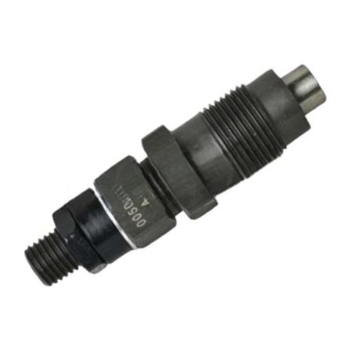
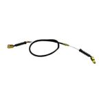
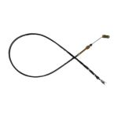
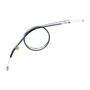
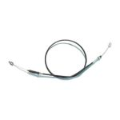
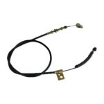
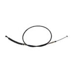
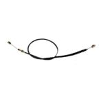
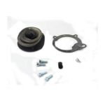

Parts › Fuel, LPG & Exhaust › 6736-401

Available
Email for a quote
Komatsu 6736-401 Fuel Injector
| OEM part number | 6736-401 |
| Fits | Komatsu |
| Models / notes | 4D94E\4D98E |
| Category | Fuel, LPG & Exhaust |
| Type | Aftermarket replacement |
Send us the quantity you need and we'll reply with pricing, usually within 24 hours. Not the exact part? We can source it. Send the part number or a photo.
More Fuel, LPG & Exhaust

21483-402Accelerator Cable
21485-402Accelerator Cable
21486-401Accelerator Cable
21487-403Accelerator Cable
21491-403Accelerator Cable
21492-404Accelerator Cable
21493-401Accelerator Cable
39040-302Diaphragm Overhaul Kit